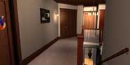

|
Mind Games | 1, 2
A Focus Group of One
 ENDER LOVING CARE represents an extraordinarily unique approach to interactive entertainment, and the implementation is completely unprecedented. The project was the brainchild of Rob Landeros and Aftermath's resident filmmaker, David Wheeler, who wrote and directed TLC, and also directed The 11th Hour. Landeros explains some of the thinking behind the development of the project: ENDER LOVING CARE represents an extraordinarily unique approach to interactive entertainment, and the implementation is completely unprecedented. The project was the brainchild of Rob Landeros and Aftermath's resident filmmaker, David Wheeler, who wrote and directed TLC, and also directed The 11th Hour. Landeros explains some of the thinking behind the development of the project:
"The ultimate interactive experience would be if you had biofeedback in the theater. You'd sit in a chair and be wired somehow, and the projector could gather enough information to adjust the story according to how you were feeling. So if something was too scary, it could make it a little less scary...if you were watching a love scene and getting bothered by it, well it would cut it back; or if you were really liking it, it would push it even further, etc. We thought that would be great, if that existed, but it doesn't -- at least not yet. So we tried to tap into the way people feel and react, not only to the thematic apperception tests, but to the story itself."
TLC is an intense psychological drama, which Wheeler adapted from Andrew Neiderman's novel by the same name, about a young couple that loses their only child in a car accident. As a result, the wife apparently begins to lose her grip on reality, so they hire a live-in psychiatric nurse to assist with her treatment. Then, predictably, an emotional tug-of-war ensues. The nurse and the husband are on opposite sides of the fence regarding the wife's treatment, but simultaneously drawn to each other by a dangerous, erotically charged attraction and test of wills. Ultimately, the story becomes an emotional roller-coaster of lust, deception, and power.
 The psychological theme and the content obviously served as a springboard for the creative team's ideas about interactivity. "I thought if we're going to have puzzles, we should have things that related to psychology -- but in a fun way," Wheeler says. "We thought of rat mazes and ink blot tests, and then we pushed it a step further."
Additionally, Wheeler and Landeros wanted to explore innovative new ways to create non-gaming interactive entertainment that was sophisticated enough to appeal to adults. "Although we've been very, very successful with games, we don't think that this incredible tool -- this nonlinear format -- should be limited to that," asserts Wheeler.
"We're interested in stuff that is more emotional and cerebral."
|
He adds that interactivity isn't dependent upon playing a game or puzzle, or moving a character around, it's really just a different way of thinking. "I don't call it interactive when you create a character, he or she walks down the hall, and then the viewer is asked: 'Should the character go left or right?' I hate that -- it's like playing with dolls or something," Wheeler declares. "We're interested in stuff that is more emotional and cerebral."
Integrated Entertainment Media
 N ANOTHER INDUSTRY FIRST, TLC was shot on 35mm film and released as a feature-length motion picture as well as a DVD and PC software product. Other companies have created games based upon movies and movies based upon games, but TLC represents the first time that both have been produced simultaneously, using the same creative team and cast. N ANOTHER INDUSTRY FIRST, TLC was shot on 35mm film and released as a feature-length motion picture as well as a DVD and PC software product. Other companies have created games based upon movies and movies based upon games, but TLC represents the first time that both have been produced simultaneously, using the same creative team and cast.
Top billing in the cast goes to Golden Globe and Emmy Award-winning actor, John Hurt. In the movie, he plays a small, but pivotal role as the enigmatic psychiatrist, Dr. Turner. In the interactive version, Hurt is "the star of the show" with a greatly expanded role. He not only acts within the drama, but also breaks the "fourth wall" by interacting with the viewer, helping to reveal hidden insights about each character (which are only hinted at in the film), and administering the exit polls and TATs. (Read an interview with Dr. Turner.)
"A Product for the Rest of Us"
ENDER LOVING CARE is a breakthrough project for a number of reasons. The single biggest reason is the audience. This adult- themed interactive story has been crafted with as much care and expertise as Landeros' and Wheeler's previous successes, the company has a hit on its hands, and the market for interactive products could explode as well.
 TLC interactive is available on DVD at our online store. TLC interactive is available on DVD at our online store.

|